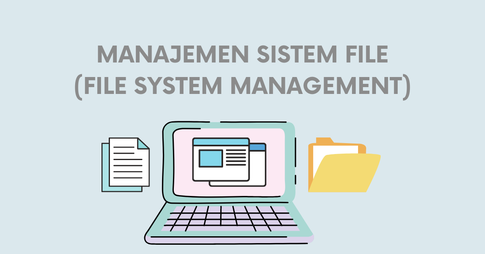

Manajemen Sistem File dalam Sistem Operasi
Konsep Dasar Sistem File
Sistem file adalah metode untuk menyimpan dan mengatur data di media penyimpanan seperti hard disk, SSD, atau flash drive. Sistem operasi menyediakan abstraksi berupa file untuk memudahkan pengguna mengelola data.
Tujuan Sistem File
- Penyimpanan Permanen: Data tetap ada setelah komputer dimatikan.
- Organisasi Data: Menyediakan struktur hierarki (folder) untuk mengatur file.
- Keamanan Data: Melindungi file dari akses tidak sah.
- Efisiensi Akses: Mengoptimalkan waktu baca/tulis file.
Struktur Sistem File
- File: Unit dasar penyimpanan data.
- Direktori: Struktur untuk mengorganisasi file.
- Metadata: Informasi tentang file (ukuran, tipe, tanggal dibuat).
- Inode: Struktur data yang menyimpan metadata file (khusus di UNIX/Linux).
Metode Alokasi File
- Contiguous Allocation: File disimpan dalam blok-blok berurutan.
- Linked Allocation: Setiap blok file menunjuk ke blok berikutnya.
- Indexed Allocation: Menggunakan tabel indeks untuk menunjuk ke semua blok file.
Contoh Sistem File Populer
- FAT32: Umum di USB flash drive.
- NTFS: Digunakan di Windows untuk fitur keamanan dan recovery.
- ext4: Umum di sistem operasi Linux modern.
Contoh Studi Kasus 1
Kasus: Bagaimana cara mengelola file di sistem operasi Linux?
Jawaban: Menggunakan perintah terminal seperti 'ls' untuk melihat isi direktori, 'cp' untuk menyalin file, dan 'rm' untuk menghapus file.
Contoh Studi Kasus 2
Kasus: Mengapa perlu melakukan "defragmentasi" hard disk pada Windows?
Jawaban: Karena file bisa terfragmentasi (tersimpan di lokasi terpisah-pisah), sehingga defragmentasi menyusun kembali blok file agar lebih berurutan dan meningkatkan kecepatan akses.